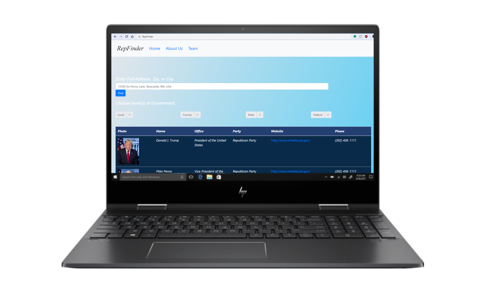

RepFinder is a search tool that finds your elected representatives, based on your address. You can choose to find your officials at the local, state, county, and federal level. By knowing who represents you, you are informed of what officals are holding office. Our tool is keep you promptly informed of who holds office.
Problem Statement
Many individuals are informed of who holds office at the national and state level yet aren’t aware of officials holding office at the county and city level near their respective location. RepFinder provides a readily available solution in allowing users to search and find officials who represent them based on their address.
User Research
After conducting an online survey that asks if individuals know who holds at office at the national, state, county and city level. In conclusion, around 72% of participants do not know who their political representatives are at the state and local level. RepFinder is front-end development project that registers geographical addresses to locate, search, and retrieve information on elected officials depending on the filter and address the user sets.
User Personas
Wireframe/Prototyping
Interface
Home page displays a user friendly display with a search bar for the user to type their physical address they can also choose what type of officials they would like to display in the filter row. Once they click ‘search’ a table will appear of elected representative with their name, office, website, party, and phone number.
Reflection
This project challenged my abilities in working and implementing API frameworks with front end web development fundamentals in JavaScript React. Furthermore, it helped me practice in developing a project within a manageable timeframe and one that serves of great purpose in providing a tool for individuals to be informed of their respective political officials who hold office.
Final Result
